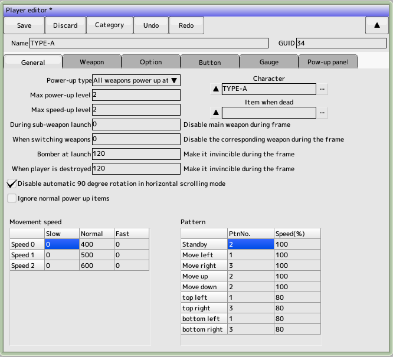
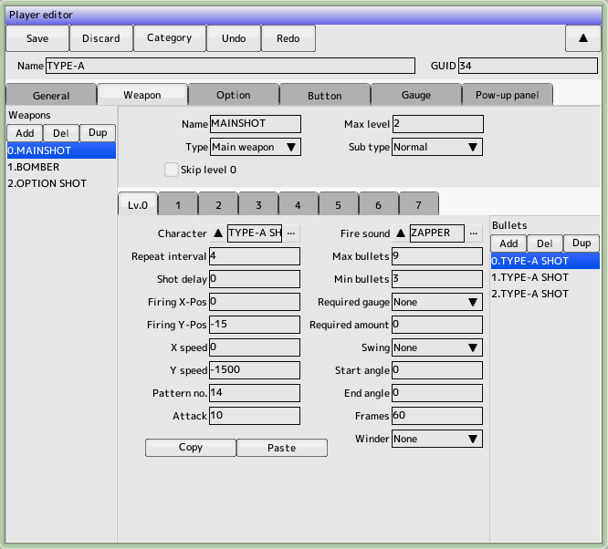
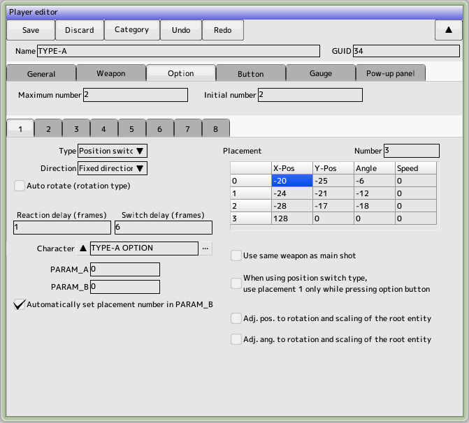
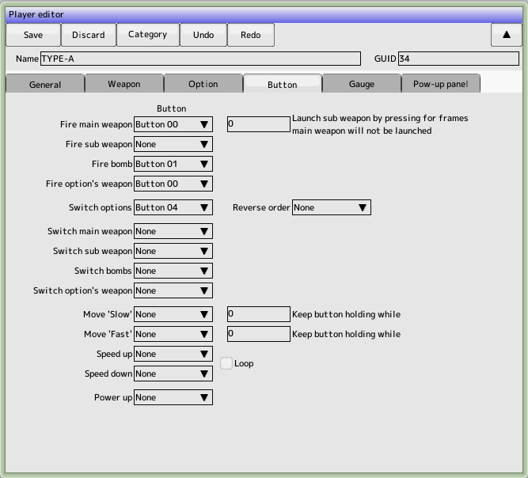
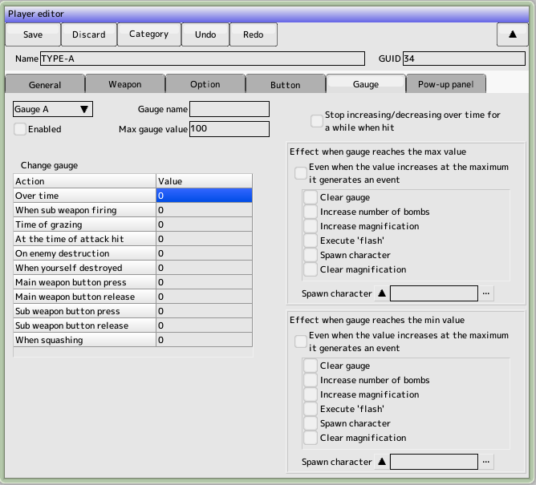
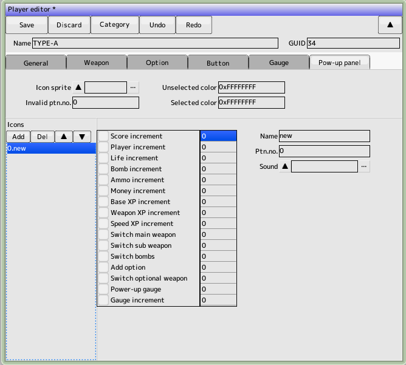

back to the original page
back to the original page
Settings tab

- Power-up Type
Specifies the action of the weapon when it is powered up with an item, etc.
- All weapons power up at the same time
- Weapons are powered up individually
- Maximum power-up level
Not used
- Maximum speed increase level
If you want to increase the speed with an item or use a button to make it variable speed
- Character
Select the character to use for the player
- Move speed setting
- Normal
Normal Travel Speed
- Low speed
Moving speed when the low speed button is pressed
- High-speed
Moving speed when the fast button is pressed
- Pattern setting
Specifies the pattern number for each direction you move to
- Disable automatic 90-degree rotation in side-scrolling mode
For compatibility with older versions, please check
- Ignore normal power-up items
- Ignore any items you get that are not gauge increases, score additions, player additions, or bomb additions
Weapon Settings tab

Set the weapons that the player can use (the list of weapons is shown on the left)
- Weapon Name
String to be displayed in the list. Doesn't affect the game
- Type
Selects the type of weapon. It also functions as a category for switching weapons with items, etc. If you select this option, please specify the child ID as well. Counter attacks will auto-attack when grazed
- Maximum power-up level
Set the maximum level for each weapon. It does not need to be a uniform value for all weapons
- Skip level 0 power ups when you use the
button to make a weapon change, assuming you don't have a power up level 0 in your possession
- Subtype
Specifies the type of subweapon. Must be set in conjunction with gauge settings for tame strikes
- Normally
used to create ordinary weapons
- Tame (fire on release)
This is used to create a tame (press and hold) button to create a tame (press and hold) and release to create a tame (release and fire) type of attack
- Tame (press to fire)
Use this to create a tame (press to fire) type of tame that you release the button and then press to fire
Weapon Levels Tab
Set the bullets to be fired for each weapon level (the list on the right is the list of bullets)
- Character
Select the character you want to use for your bullets
- Shot sound
This is the sound effect that is played when firing. If you want to fire more than one shot at a time, set it to only one of them
- Repeat weight
Repeat speed in frames when the button is held down. Disabled in tame mode. Disabled for tame hits
- Setting the time in frames from the time the
- Firing Delay
button is pressed to the time it takes to fire. Disabled on hoarding. Disabled on tame hits
- Launch XY position
Offset of the launch position from your aircraft
- Moving speedXY
Specifies the speed at which the bullet will move. If you write a script, you can set the movement in detail
- Pattern number
Character editing
- Attack power
In character editing This takes precedence over the attack strength you set.
- Maximum number of shots
The number of shots that can be on the screen at the same time. Must be set up in conjunction with the minimum number of firings
- Minimum number of shots fired
This is the number of spaces required to fire a shot. It must be set up in conjunction with the maximum number of shots fired. Example)If you want to fire two 3-way shots in a row, set 6 for the maximum number of shots and 3 for the minimum number of shots. Please set it up
- Swing
You can change the firing angle when you hold down the button
- One way
Varies in the specified number of frames from the start angle to the end angle
- Back and forth
Change to the end angle, then change for a specified number of frames to the start angle
- Repeat
On reaching the end angle, resume from the start angle
- Winder
You can set the vertical and horizontal settings so that the shot will move as your plane moves
- Required gauge, required gauge amount
The gauge required for tame strikes. Only valid for tame strikes, and the one with the highest weapon level will be fired according to the gauge amount
- Copy and paste
Copy and paste bullet settings
Options tab

- Maximum number of options
Number of options that can be equipped at the same time
- Type
Basic Types of Options
- Fixed position
Always a fixed position. Use placement A on the right side
- Position Switching
The right-hand placement position will lock you in the commanded position. You can use the optional buttons to switch up to four positions
- Tracking the ship
Tracks the path the ship has taken. The time is delayed by the number of frames you specify in the reaction delay time
- Rotate
Rotate around your own machine with the right side position as the initial position. Negative rotation speed will reverse the rotation. Normally, you can rotate by pressing the option button, but if you check the Auto Rotate checkbox, your machine will always rotate.
- Optional direction (direction of attack)
- At a fixed direction
At an angle to the right alignment position, facing the specified direction
- Automatically orientates itself in the direction of travel
- backward direction
Automatically goes in the opposite direction to the direction the plane is moving
- Facing outward
Overse direction to my plane
- Reaction delay time
Time to delay a move in relation to the movement of your aircraft
- Switching delay time
The time it takes for position-switching options to swap positions
- Character
optional character
- Use the same weapon as the main shot
Originally the option was a weapon type Fires the specified option. Check this to ignore it and fire the main weapon
Button Settings Tab

- Firing the main weapon
Button to fire the main weapon specified in the weapon type
- Press and hold switch
When the button is held down for a specified number of frames, the main weapon will stop and the sub-weapon will fire
- Firing sub-weapon
Button to fire a sub-weapon specified by weapon type
- Firing Bomber
Button to fire the bomber specified by weapon type
- Firing Optional Weapon
- Button to fire an optional weapon type
- Change options
Button to change the position of options
- Switching the main weapon
Button to switch the main weapon in sequence
- Sub-weapon switching
Button to switch sub-weapons in sequence
- Bomber switching
Bombers switching button
- Optional Weapon Switching
Button to switch option weapons in sequence
- Low speed movement
You can set the button to go to low speed and the time to hold the button down in the main unit.
- Fast travel
Button for fast travel and time to hold the button down can be set on the main unit
- Increase speed
Button to increase the speed of the unit by one step, loopable
- Speed down
Button to lower the speed of the unit by one step, loopable
- Power up
Button to power up when power up is panel-based
Gauge Settings Tab

You can set up to 3 gauges.
- Use
check to enable. Check the gauge to be used
- Gage name
Not used in game
- Maximum gauge value
Maximum value of the gauge to increase. The effect occurs when this value is exceeded
- Increase or decrease of gauge
- Per frame
This value is added or subtracted each time one frame passes
- When firing a sub-weapon
- This value is added or subtracted each time a sub-weapon is fired
- When grazing
This value is added or subtracted when a grazing test occurs
- When an attack is hit
- This value is added or subtracted when the shot hits an enemy
- When you destroy an enemy
- When you destroy an enemy, this value is added or subtracted
- When your ship is destroyed
, this value is added or subtracted when your ship is destroyed.
- Increase or decrease when the main weapon button is pressed
- Increase or decrease when the main weapon button is released
- The sub-weapon button will be added or subtracted when the
- sub-weapon button
is pressed
- Additions and subtractions will be made when the sub-weapon button
- is released
- When firing a thumb shot
- It will be added or subtracted at the time of firing a thumb shot, as set in the weapon settings
- Stops increasing and decreasing the time lapse for a while when an attack is hit
-
- Stops increasing and decreasing the time lapse for 10 frames from the frame that your shot hits the enemy
- The effect of reaching the maximum (minimum) gauge value.
- Clear the gauge
- Set the gauge value to 0
- Increase the number of times the bomber is used
- Increase the number of times the bomber is used
- Increase the multiplier
Unused
- Execute the flash
- Generate a flash effect with the specified character
- Make the character appear
- Make the specified character appear from the top of the screen
- Clear the multiplier
- Return the increased multiplier

Power Up Panel Tab
Set the panel-style power-up
We need to set up the layout for drawing
- Sprite for the icon
Specifies the sprite for the panel display
- Invalid Pattern Number
Specifies the pattern number when the panel is not available
- Drawing color for selected and deselected items
Drawing color of the icon in 32-bit ARGB
Icon Settings in Panel
Back to the top of the page